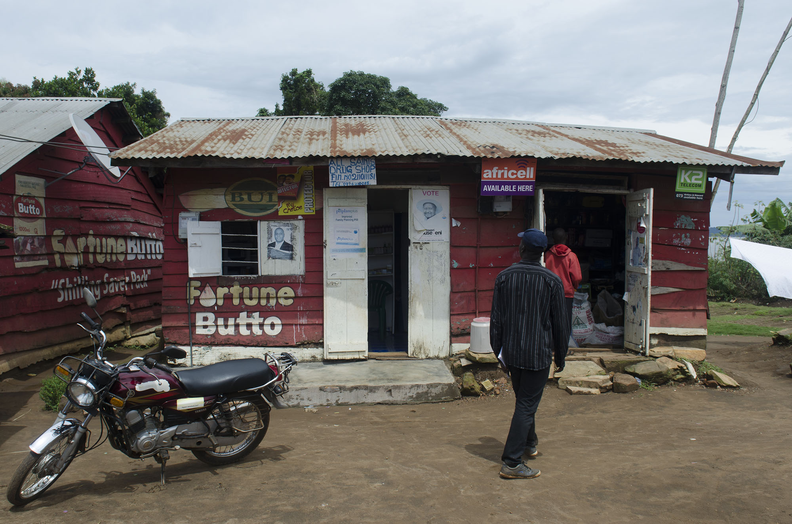

This reporting orginally appeared in the Daily Monitor, Uganda's largest independent newspaper. Some details were changed for an American audience.
KALANGALA, UGANDA. Just after dawn on the beaches of the Ssese Islands, fishermen land with their hauls from a cold night on Lake Victoria. On a good night they might earn up to 30 dollars -- more than enough for a night of drinking and the comforts of a sex worker.
The fishermen say sex is the fastest way to warm up from the lake’s chill. For 6 dollars — more than double what they would normally earn — sex workers of the region offer unprotected sex, a cost the fishermen pay with their new shillings and possibly health.
They acknowledge this raises their chance of contracting HIV, but accept it as another risk in their unsteady lives.
“[It is] the curse of the lake, when someone drowns he dies instantly,” local fisherman Rogers Paul Kiberiu said. “For HIV at least he will have some time to remain on earth and enjoy life.”
Kiberiu is a member of the migrant workers colloquially known as the fisher folk who, alongside sex workers, travel between village landing sites on the Ssese islands and the shores of Lake Victoria. Often both parties come from mainland Uganda seeking the quicker money that comes with fishing or prostitution. For some the island offered a refuge after they lost their families or could no longer return to their home village for other reasons.
Their high risk lifestyle can lead to quick rewards but also an early death.
Mr. Kiberiu doesn’t know his status; he fears the stigma that comes with a visit to a medical clinic and does not see the upside of going. He said some go for testing and give fake contact information, leaving a trail of alias at each landing site.
Often it’s because fishermen migrate with the fish, making it difficult to return to the same clinic they enrolled in. If they leave before properly transferring their records to a new clinic they must start over and risk being seen in another queue.
Kiberiu said some view contracting HIV as the inevitable reality of enjoying life as a true fisher folk and are not convinced they should seek treatment. For less motivated groups like these, any additional roadblocks only provides further justification to avoid a trip to the clinic.
On a good night a fisherman could earn up to 30 dollars, nearly a third of what the average person in the area earns in a month according to the Ugandan Bureau of Statistics. Money is spent quickly back on dry land, fisher folk say a celebrating brings good luck and more fish. Heavy drinking and prostitution are common. Sex workers offer unprotected sex for 6 dollars.
Consistent treatment
A lack of easily transferable records between clinics further discourages treatment. Clinics in much of Uganda still rely on decentralized paper records adding another challenge to tracking patients as they migrate.
Dr. Hillary Bitakaramine, district health officer for Kalangala, said the lack of a unique identifier for each client is one of his district’s biggest challenges. He is advocating for a computerised system interconnected at the district level so treatment can migrate with the populations they are meant to serve.
In much of Uganda, large district hospitals have an electronic records system however a lack of communication between them makes it difficult to track migrants. Further, these systems have yet to spread into the rural communities where many of these people reside.
A national ID would allow a clinic to track down records stored elsewhere and inform the former clinic to pause treatment. Without records of how a patient responded to certain drug, doctors are much less effective and may start them at the beginning stages of antiretroviral treatment (ART) again and again.
The treatment regimen is made up of three antiretroviral drugs (ARV) which suppress the HIV virus but never remove it completely. Overtime any individual ARV might need alteration to keep up with the mutating virus and changes in a person's overall wellness, which is one reason consistent medical access plays such a big role in keeping someone’s quality of life steady.
Inconsistent use of the medicine is also a concern for the general public health. Stopping treatment or using the same ARV cocktail for too long can lead to drug resistance, which creates a more dangerous virus for everyone. A person on ART is less likely to spread the virus as well, especially if the clinic they regularly attended gives them information and resources to practice safe sex.
For other Kalangala residents like Rose Nakirya, gaps in treatment are not something to worry about. Nakirya was diagnosed with HIV seven years ago and began ART soon after. She said she has been going to the same clinic about every two months for the last seven years.
Nakirya Rose has lived with HIV for seven years in the Kalangala district. She said she views the disease like any other and was not afraid of the stigma. This view helped motivate her to immeditely begin ART and take her medicine every day.
Residents are considered high risk since Kalangala has a 26.7 percent prevalence rate — nearly three and half times that of the rest of the country — according to a 2013 Makerere University study. Those in the district who test positive are immediately enrolled on ART, as part of the test and treat program, instead of allowing their immune system to deteriorate like in other parts of Uganda.
Even at 58, Nakirya said she has a “bright future”, which she largely attributes to the regularly receiving medicine. But not everyone can go to the same clinic year after year.
Programs like test and treat worked well for Nakirya and have helped bring the prevalence rates of Kalangala more in line with the rest of Uganda. However a treatment gap remains for a significant population on the island.
Due to the normally small amount of residents, health clinics at the landing sites do not stock ARVs. The district center does monthly outreach deliveries to them, although Bitakaramine said it is difficult to judge how much medicine they will need.

Kiberiu's landing site's single medical store occupies the left half of this building and is only stocked with necessities. These stores do not carry medication for HIV treatment, forcing any fisher folk with the infection to walk an hour inland to the island's main health center.
The guessing game
Lack of a unique identifier does not only harm migrant clients, but also the clinics serving them. If a sub-district is unsure of how many people living with HIV are in their area, it becomes difficult to assure the correct stock of ARVs. A clinic may overstock medicine leading to more waste if they are unaware a client has migrated to another provider.
In May, the regional health center in Kalangala received a shipment of ARVs that were set to expire by June. The pills would need to be distributed quickly or be wasted. At the same time, many sub-districts were unaware of how many people living with HIV currently fell under their care.
Lack of electronic patient records is not the sole cause for receiving a medical shipment near expiration, but it does amplify the effects of problems found elsewhere in the medical supply chain.
This month Kalangala was unable to distrubute the ARVs in time, wasting multiple garbage sacks worth of medication.
“Because of a lack of an electronic system, we don’t have good data to rely on,” said Dr. Diana Atwine, the head of Medicines and Health Service Delivery Monitoring Unit at State House.
While most districts have adopted an electronic record system to track their medical supply chain, many still rely on paper records to track patients. Paper records are difficult to transfer and are more prone to human error, which feeds in less accurate information to the supply chain records.
Dr. Nazarius Tumwesigye, a professor at Makerere University School of Public Health who has studied digital health management records, said he believes that its adoption would help with drug allocation. He points to the high upfront costs and lack of appreciation of the potential benefits as reasons why they have not been widely adopted.
Connecting the systems
In other parts of the country digital records have replaced paper ones, although an interconnected district level system is yet to materialize. Atwine said she supports a full electronic system, and e-health policy is a major target of her unit. She hopes within five years to have an electronic system throughout the country.
With help from over four million dollars of Centers for Disease Control (CDC) funding, the Makerere University School of Public Health partnered with University of California San Francisco launched a program that uses fingerprints to track people living with HIV. The project titled the Monitoring and Evaluation Technical Support (METS) began in July in the 48 districts the CDC operates.
The other 63 districts have received funding to improve patient records as a part of broader USAID and United State Department of Defense humanitarian programs. The CDC program is specifically targeted at tracking patients and aims to reduce patient duplicity.
Dr Andrew Kambugu demonstrates the Integrated Clinic Enterprise Application, an electronic patient tracking system that he said has helped medical staff spend more time working with patients and less time doing paper work.
The Infectious Disease Institute (IDI) at Makerere University in Kampala developed their own digital records system that tracks all of its patients in 2008. Dr. Andrew Kambugu, head of the Research Program at the IDI, said before using the system he was nervous about how it would affect doctor’s bedside manner. But after the system was implemented he said it has allowed medical staff to spend less time on paperwork and more time with patients.
These benefits only last as long as the patient is at the IDI, however. If they leave for another clinic, their record is summarized to a single printed sheet to be delivered to the next doctor. In some cases the record could be shared digitally, but Kambugu clarifies this is not available in most settings.
The Ugandan health system works on a referral basis with five levels ranging from a village medical distributor to the regional hospital. If this hospital still cannot solve the problem, it will refer the patient to the national level IDI. For continued treatment, it is likely the person will return to their regional hospital or health center.
Even if the patient’s local clinic has a digital record system, the two might not communicate because the IDI’s system is proprietary and requires expensive Microsoft software most clinics cannot currently afford.
Innovative investments
Dr. Kambugu said he believes more investment should be made in district level health systems. In 2001, countries in the African Union met in Abuja, Nigeria, and pledged to allocate at least fifteen percent of their budget to improve the health sector. While Uganda has improved medical funding since the declaration, it consistently allocates less than ten percent of its annual budget to it.
Beyond the benefits to clients, digitizing health records turns out to make economic sense as well. According to an UNAIDs report, investment in ART generates economic returns more than twice what was initially spent. Digital records will improve efficiency of ART and in turn improve this return on investment.
When Tumwesigye studied the transition from paper to digital administrative health records nearly a decade ago, he found the digital system took one sixth as much time as the paper one. Labor is a significant portion of the medical budget, and time is money. While this bump in efficiency might not directly translate between administrative and patient records, Tumwesigye said he believes there would be similar improvements.
Without investment in a more accurate patient record system the Ugandan government will continue paying more for basic health care services and some people like the fisher folk will continue to be lost.
Midday, after the morning celebrations of a successful catch, Kiberiu and the other fisher folk fold nets in preparation of tonight’s voyage. Many do not know how to swim and are aware this could be their last night with air in their lungs.
The men laugh when asked if they know their status – for them the immediate dangers of drowning or a fishless night take priority. Systematic errors like lost records only add another reason for them to avoid treatment.
When the fish stop biting, they will leave this landing site and their records behind. Perhaps these documents will migrate with them, but without a national system in place, there is as little guarantee as them catching a big fish tonight.
The last ferry of the day leaves from Kalangala for the mainland. The island’s remoteness amplifies deficiencies in its medical infrastructure. Though the risks of fishing are high and the risk of HIV is even higher, few highly trained medical personnel want to live in such a remote area and few administrators in the capital city show much concern for this distant set of islands in the middle of the world’s second largest lake.